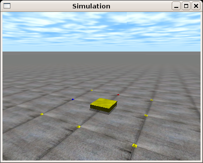
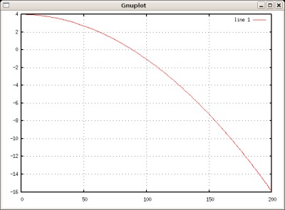
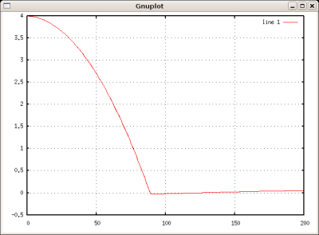
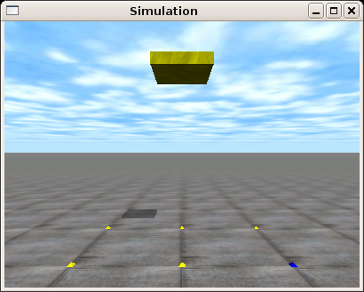

This work is licensed
under a Creative
Commons Attribution-ShareAlike 2.5 Spain License
This work is licensed
under a Creative
Commons Attribution-ShareAlike 2.5 Spain License
Este proyecto tiene una licencia libre. Se permite su copia, modificación y distribución, bajo los términos de la licencia Creative commons
|
Cuaderno técnico 10: Cómo utilizar el Motor físico ODE. Ejemplos en Python (I) |
|
 |
Los ejemplos “hola mundo” de manejo del motor físico Open Dynamics Engine (ODE) que se encuentran en el cuaderno técnico 9, y que están programados en C, ha sido reescritos en Python por Rafael Treviño.
Estos tres ejemplos son:
Gravedad: Ejemplo para consola. Caida libre de un objeto.
Gravedad + colision: Ejemplo para consola. Caida al suelo del mismo objeto.
Gravedad + colision + 3D: Ejemplo gráfico. Mismo ejemplo anterior pero representado en 3D, haciendo uso de la librería drawstuff. Se puede cambiar la posición de la cámara para explorar el mundo virtual creado.
Estos programas de ejemplo se han probado en una máquina con Debian/Etch. Para instalar el ODE sólo hay que hacer lo siguiente:
|
# apt-get install libode0c2 libode0c2-dev |
Si se quiere probar el ejemplo gravedad_colision-3D que utiliza representación en 3D utilizando OpenGL será necesario tener instalados, además, los siguientes paquetes:
* libx11-dev
xlibmesa-gl-dev
python-opengl
Además hay que instalar el PyOde, que de momento no está disponible en Debian.
Ejemplo “hola mundo” 1: Gravedad |
Programa: [Programa en Python]
Explicación:
Consultar el cuaderno técnico 9.
Ejemplo de utilización:
Descargar el paquete gravedad-python.tgz, descomprimirlo, entrar en el directorio y ejecutar gravedad.py, redireccionando la salida a un fichero que luego se visualiza con Octave.
$ tar vzxf gravedad-python.tgz $ cd gravedad-python/ $./gravedad.py > test.m $ octave test.m |
Al ejecutar el programa en octave se mostrará la gráfica de la caída de la caja:
|
 |
Ejemplo “hola mundo” 2: Gravedad y colisión |
Programa: [Programa en Python]
Explicación:
Consultar el cuaderno técnico 9.
Ejemplo de utilización:
Descargar el paquete gravedad_colision-python-src.tgz, descomprimirlo, entrar en el directorio y ejecutar gravedad_colisition.py, redireccionando la salida a un fichero que luego se visualiza con Octave.
$ tar vzxf gravedad_colision-python-src.tgz $ cd gravedad_colision-python-src $ ./gravedad_colision.py > test.m $ octave test.m |
Al ejecutar el programa en octave se mostrará la gráfica de la caída de la caja:
|
 |
Ejemplo “hola mundo” 3: Gravedad, colisión y visualización en 3D |
Programa: [Programa en Python]
Explicación:
Consultar el cuaderno técnico 9.
Ejemplo de compilación:
Este ejemplo es necesario compilarlo primero, para generar el wrapper de la librería drawstuff que permite la visualización en 3D.
Descargar el paquete gravedad_colision-3D-python-src.tgz , descomprimirlo, entrar en el directorio y compilar con make:
$ tar vzxf gravedad_colision-3D-python-src.tgz $ cd gravedad_colision-3D-python-src $ make |
Ejemplo de utilización:
Simplemente ejecutar el programa:
$./gravedad_colision-3D.py |
Se abrirá una ventana en la que se verá la simulación:
|
 |
|
Fuentes |
|
Programa “hola mundo” 1: gravedad. |
|
|
Programa “hola mundo” 2: gravedad + colisiones. |
|
|
Programa “hola mundo” 3: gravedad + colisiones + 3D |
Cuaderno técnico 9: Cómo utilizar el Motor físico ODE. Ejemplos en C (I)
ODE: Open Dynamics Engine.
PyODE: Utilización del ODE desde Python
Tao: acceso a diferentes utilidades gráficas y multimedia para .NET/Mono. Incluye acceso a las librerías de ODE.
|
|
|
Este proyecto tiene una licencia libre. Se permite su copia, modificación y distribución, bajo los términos de la licencia Creative commons |
A Rafael Treviño por haber portado los ejemplos a Python y permitir su publicación. ¡Gracias! ;-)
27/Junio/2006: Añadidos enlaces al blog de Rafael Treviño
21/Junio/2006: Publicada primera versión de este cuaderno